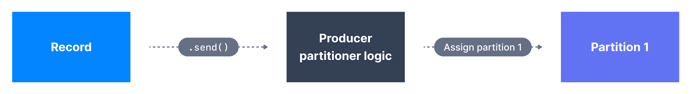
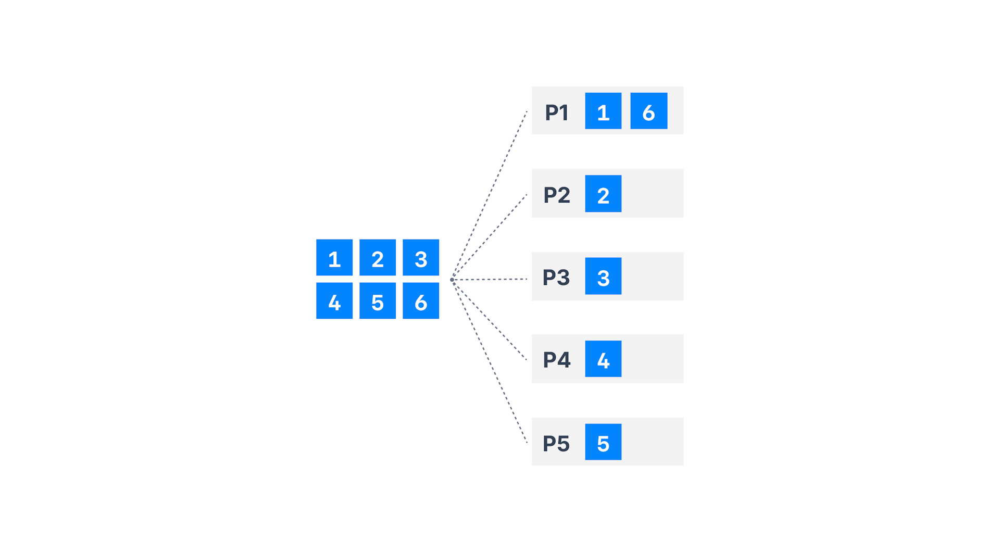
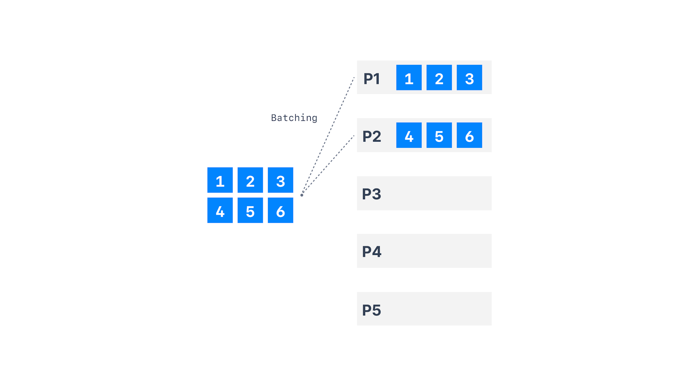

2. Partitioner Key Nonnull
-
Key Hashing是确定Key到分区的Mapping的过程；
-
在默认的Kafka分区器中，使用murmur2算法对Key进行Hash；
targetPartition = Math.abs(Utils.murmur2(keyByte)) % (numPartition - 1)-
即相同的Key将转到相同的分区，且将分区添加到主题将完全改变公式；
-
最好不要覆盖partitioner的行为，但也可使用partitioner.class来覆盖；

3. Partitioner Key Null
-
当Key为空，生产者将有不同的默认partitioner；
| Entry | Memo |
|---|---|
Round Robin Partitioner |
Kafka ≤ 2.3 |
Sticky Partitioner |
Kafka ≥ 2.4 |
-
Sticky Partitioner提高生产者的性能，尤其在高吞吐场景下，
especially with high throughput；
4. Round Robin Partitioner

-
对Kafka ≤ 2.3，当没分区，也没指定Key时，
默认的partitioner会以round-robin fashion发送数据； -
这会导致更多的批次(batch，每个分区一个批次)和更小的批次(想象下100个分区)；
-
这是个问题，因较小的批会导致更多的请求和更高的延迟latency；
5. Sticky Partitioner

-
性能目标(goal)是将所有记录发送到单个分区，而非多个分区，以改进批处理；
-
producer sticky partitioner将：
-
粘贴到分区，直到批次已满或linger.ms消逝；
stick to partition until batch full or linger.ms elapse； -
发送批次后，更改分区为sticky；
-
-
这将导致更大的批次和更低延迟latency，因有更大请求，且更可能达到batch.size，
-
随时间推移，记录仍均匀分布在分区中，因集群的平衡(balance)不会受到影响；
still spread evenly across partition；